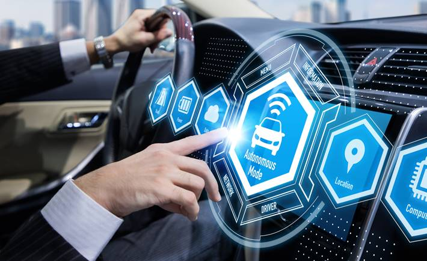

El sector automotriz ha sido otro de los grandes beneficiados por la implementación del IoT, ya que los vehículos inteligentes ahora son capaces de conectarse a internet, lo que les permite ofrecer una serie de funciones avanzadas para mejorar la seguridad, la eficiencia y la experiencia de conducción.
Navegación en tiempo real: Los vehículos inteligentes están equipados con sistemas de navegación que se actualizan en tiempo real, proporcionando a los conductores información sobre el tráfico, condiciones climáticas y rutas alternativas. Esto ayuda a optimizar el tiempo de viaje, reduciendo los atascos y mejorando la eficiencia del combustible.
Diagnósticos remotos: Los autos modernos pueden detectar fallos en sus sistemas y enviar diagnósticos directamente al propietario o al taller de servicio. Esta capacidad permite una detección temprana de problemas mecánicos o electrónicos, lo que facilita un mantenimiento preventivo y reduce los costos de reparación al evitar daños mayores. Además, el vehículo puede proporcionar recordatorios sobre el mantenimiento necesario, como cambios de aceite o revisiones de frenos.
Conducción autónoma: Uno de los desarrollos más emocionantes del IoT en la industria automotriz es la conducción autónoma. Los vehículos con capacidades autónomas están equipados con sensores, cámaras y sistemas de IA que les permiten "ver" su entorno y tomar decisiones de conducción sin intervención humana. Aunque aún estamos en las primeras etapas de esta tecnología, los automóviles autónomos prometen revolucionar la movilidad, reduciendo los accidentes de tráfico y haciendo que el transporte sea más eficiente y accesible.
Gestión de flotas: Para empresas con flotas de vehículos, los sistemas IoT pueden monitorear y gestionar en tiempo real la ubicación, el rendimiento y el estado de cada vehículo. Esto no solo mejora la eficiencia operativa, sino que también ayuda a optimizar los costos de combustible, mejorar la seguridad de los conductores y realizar un mantenimiento adecuado a tiempo.